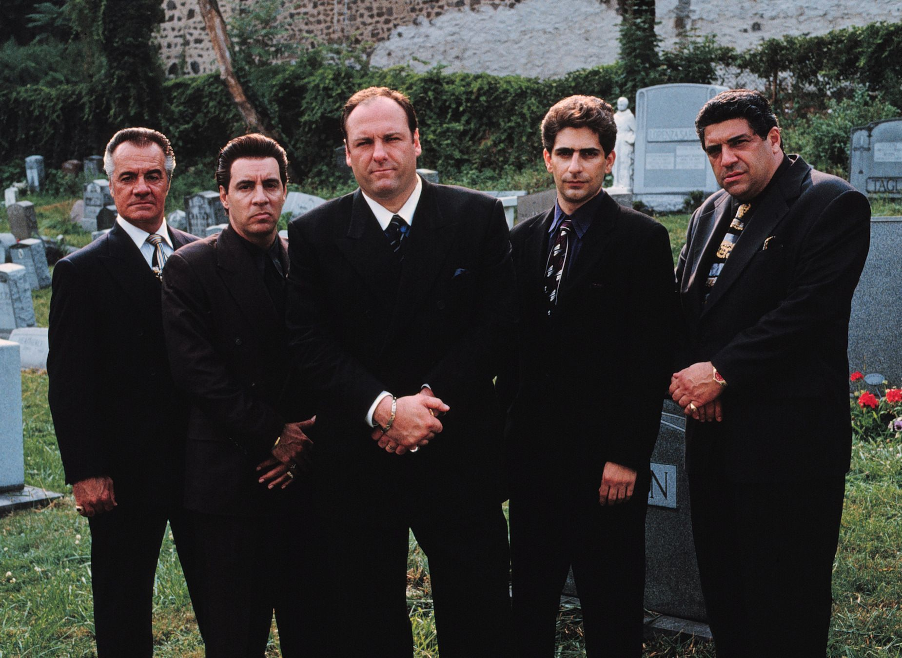
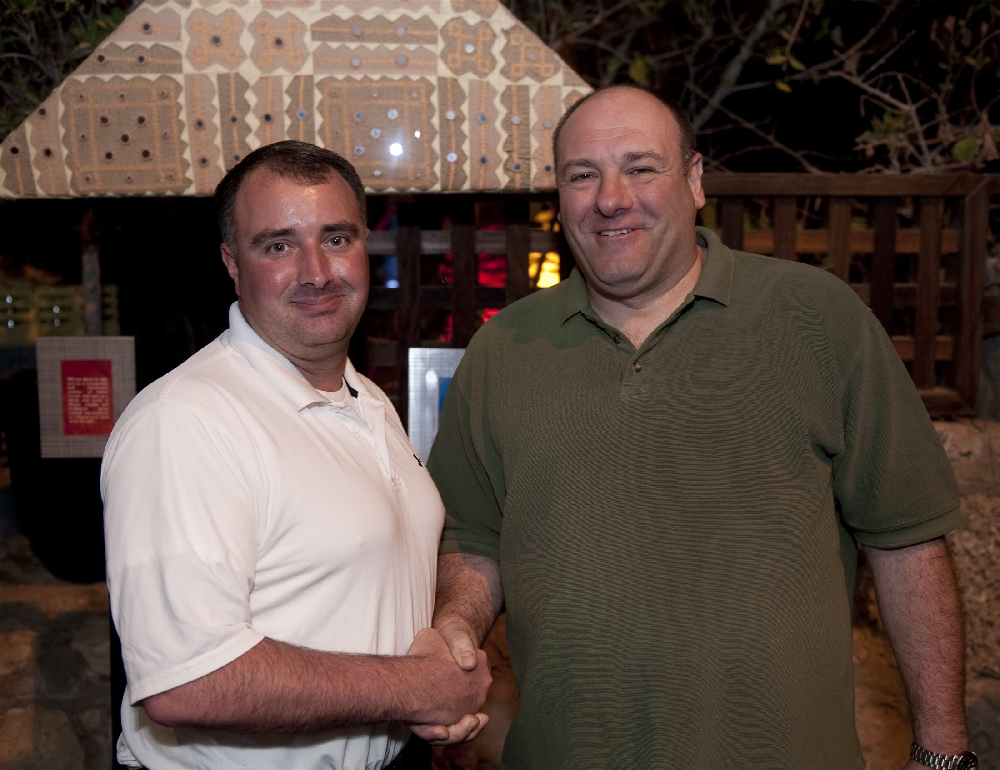

Los Soprano
El piloto instala la doble vida de Tony y convierte un ataque de pánico en la puerta de entrada a toda la serie.

Tony Soprano dirige una familia criminal y trata de no perder a la suya. Los ataques de pánico lo llevan a un lugar inesperado: el consultorio de una psiquiatra.
Entrar a la historiaEn Los Soprano, la violencia no vive lejos de la mesa familiar: se sienta a comer, llega tarde y pregunta cómo estuvo el día.
David Chase estrenó la serie en HBO en 1999. Su punto de partida parecía una contradicción: un jefe mafioso con ataques de pánico que comienza terapia. Esa tensión terminó siendo el motor de seis temporadas.
La historia mira a Tony como padre, marido, paciente y criminal sin ordenar esas identidades. El resultado no busca justificarlo: expone cómo cada espacio contamina al siguiente.

Tony sabe leer una amenaza y ordenar un negocio. En el consultorio de Melfi, esa experiencia sirve poco: tiene que hablar de su madre, de sus hijos y de un miedo que no puede intimidar.
Conocer a los personajesEl piloto instala la doble vida de Tony y convierte un ataque de pánico en la puerta de entrada a toda la serie.
Un sueño febril obliga a Tony a aceptar una traición que prefería no mirar.
Humor negro, frío y desorientación: Paulie y Christopher pierden el control de una tarea aparentemente simple.
La crisis matrimonial deja a Gandolfini y Falco frente a frente, sin la protección habitual de los códigos mafiosos.